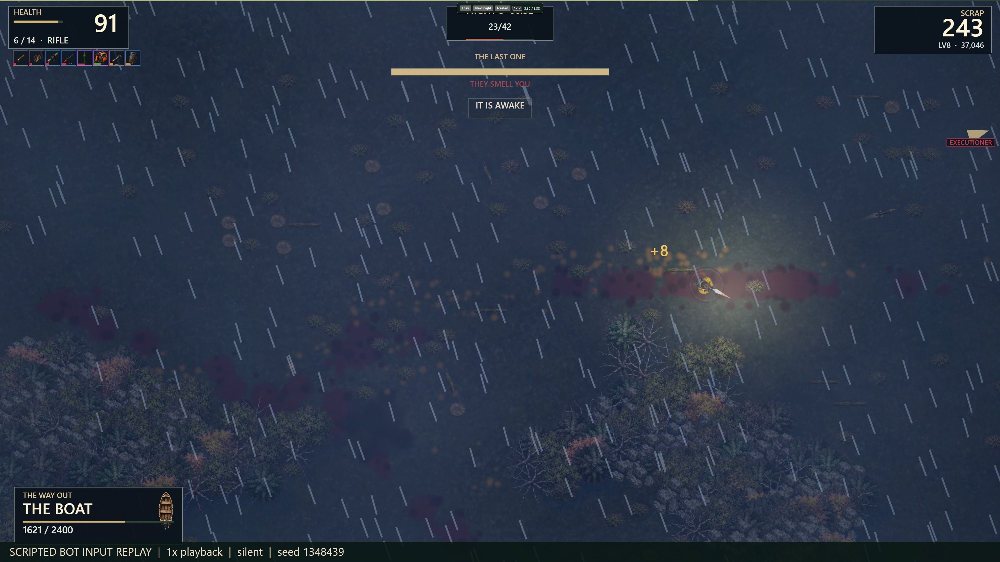

Fallen Nights / Riverside demo / bw24 / 8 September 2026
Actual gameplay from the current demo
This short, silent clip was recorded directly from the game renderer while replaying a scripted bot's verified inputs. It is not generated footage or a trailer.
720p clip, about20seconds. No autoplay. Open the video directly if your browser does not show the player.

The bot knows the map and makes quick menu decisions. Its verified8:38.57escape is not a human playtime estimate. The game keeps4K output and a60fps rendering cap; hardware performance varies.